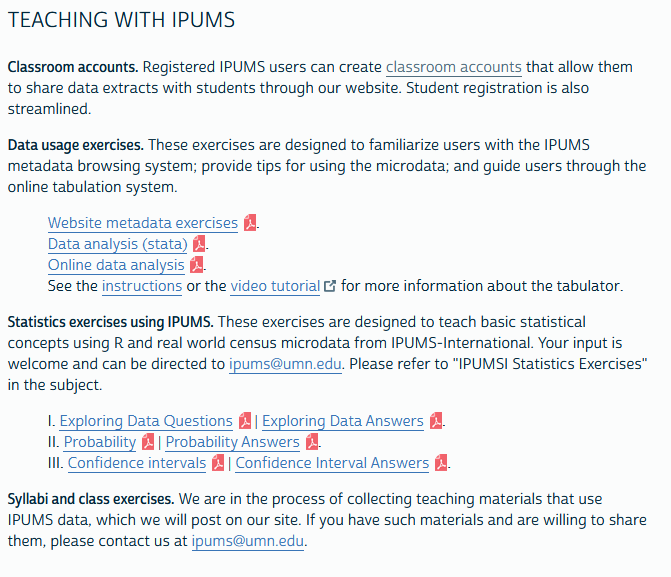

1 Conditions d’utilisation
1.1 Conditions générales
Les données fournies par IPUMS sont soumises à des conditions d’utilisation qui doivent être respectées et que nous avons retraduites ici en français (merci à google translate).
1.1.1 Redistribution interdite
“Toutes les données extraites de la base de données IPUMS International sont destinées au seul usage du licencié. En vertu des accords d’IPUMS International avec des agences collaboratrices, la redistribution des données à des tiers est interdite. Chaque membre d’une équipe de recherche utilisant les données doit demander l’accès et obtenir une licence individuelle”.
- Commentaire : l’ensemble des participants à l’école d’été devra donc acquérir une licence individuelle IPUMS et sera réputé avoir effectué l’ensemble des opérations d’acquisitions décrites par la suite.
1.1.2 Usage : Limitation à la recherche et l’enseignement
“Ces extraits de microdonnées sont fournis à des fins exclusives d’enseignement et de recherche scientifique et ne peuvent être utilisés à d’autres fins sans l’approbation écrite explicite de l’autorité statistique officielle compétente. Il est interdit aux utilisateurs d’utiliser les données d’IPUMS International ou d’autres distributeurs autorisés dans la poursuite de toute entreprise commerciale ou génératrice de revenus, à titre privé ou autre. La publication de résultats de recherche basés sur les microdonnées d’IPUMS International est autorisée dans les communications telles que les articles scientifiques, les revues, les rapports de recherche, etc. L’utilisation de ces données à des fins généalogiques est strictement interdite”
- Commentaire : Les objectifs de l’EE CIST 2023 sont parfaitement en accord avec les règles d’usage de la base. Il faudra toutefois bien prendre garde de citer la source dans l’ensemble des documents pédagogiques ainsi que les éventuels articles de recherche
1.1.3 Confidentialité : interdiction d’identifier des individus
“Les utilisateurs maintiendront la confidentialité des personnes et des ménages. Tous les identifiants directs, ainsi que toutes les caractéristiques qui pourraient conduire à une identification, sont omis des données. Toute tentative de vérifier l’identité des personnes ou des ménages à partir des microdonnées est interdite. Il est également interdit d’alléguer qu’une personne ou un ménage a été identifié dans ces données. Les résultats statistiques susceptibles de révéler l’identité de personnes ou d’entités ne peuvent être communiqués ou publiés sous quelque forme que ce soit.”
- Commentaire : Même si les données sont en général anciennes et portent sur des échantillons de 10% maximum, il est impératif de respecter systématiquement l’obligation de confidentialité et de tenter de repérer une personne si IPUMS n’a pas suffisamment assuré cette condition.
1.1.4 Sécurité : protection des micro-données
“Les utilisateurs mettront en œuvre des mesures de sécurité pour empêcher tout accès non autorisé aux microdonnées acquises auprès d’IPUMS International, de ses partenaires ou distributeurs autorisés. À l’issue de cette recherche, les extraits de données ne peuvent être conservés que s’ils peuvent être sécurisés en toute sécurité. Si la sécurité ne peut être garantie, les microdonnées doivent être détruites.”
- Commentaire : Cette obligation signifie que les données individuelles ne pourront pas être mises à disposition via le serveur de l’EE CIST 2023 sauf si celui-ci est correctement sécurisé. Il faudra les faire télécharger par les stagiaires ou formateur au moment de celle-ci. On pourra en revanche stocker les indicateurs agrégés issus de l’agrégation des données individuelles.
1.1.5 Obligation de citation
“Vous devez citer IPUMS International et l’autorité statistique officielle compétente comme source des microdonnées. Chaque extrait est accompagné d’un langage de citation approprié et pour plus d’informations sur la citation appropriée, reportez-vous à la citation et à l’utilisation. Les publications et les rapports de recherche utilisant IPUMS International doivent être ajoutés à la [bibliographie du projet IPUMS] (https://bibliography.ipums.org/).”
- Commentaire : les documents pédagogiques de l’EE CIST 2023 utilisant les données IPUMS devront se conformer à cette obligation de même que les éventuels articles de recherche qui en seront issus.
1.1.6 Rapports d’erreurs
“L’utilisateur accepte d’informer ipums@umn.edu des erreurs dans les données”
- Commentaire : c’est la moindre des choses dans une perspective éthique et collaborative.
1.1.7 Sanctions en cas de non respect
“La violation de cet accord entraînera la révocation de cette licence, le rappel de toutes les microdonnées acquises, une motion de censure à la ou aux organisations professionnelles concernées et des poursuites civiles en vertu des lois nationales ou internationales, à la discrétion des régents de l’Université du Minnesota. et les agences statistiques officielles. Des sanctions peuvent également être prises contre l’institution à laquelle le contrevenant est affilié.”
- Commentaire : sans commentaires … il serait catastrophique pour le projet d’EE CIST 2023 de voir l’ensemble des cours mis à l’index …
1.2 Conditions pour l’enseignement
Les règles générales sont assouplies dans le cas de formations pédagogiques qu’IPUMS encourage particulièrement. Le site web fournit d’ailleurs un certain nombre de ressources pédagogiques sous la forme de videos ou de programmes corrigés écrits en R ou Stata.

Mais le point le plus intéressant pour l’EE CIST2023 est la possibilité de créer des classrooms c’est-à-dire des groupes d’utilisateurs (enseignants ou stagiaires) qui peuvent partager les mêmes fichiers de données pour une période de temps. Les conditions d’utilisation sont particulièrement intéressantes comme le montre la traduction en français de la page correspondante.
1.2.1 Conditions générales
Les utilisateurs d’IPUMS peuvent créer des comptes de classe. Les comptes ont trois caractéristiques principales : Les instructeurs peuvent partager des extraits de données en ligne avec les étudiants, Les étudiants peuvent s’inscrire plus facilement que les utilisateurs réguliers. Les instructeurs peuvent voir une liste de ceux qui sont inscrits et donc capables de recevoir des données IPUMS.
- Commentaire : Ces conditions sont parfaitement en adéquation avec les objectifs de l’EE CIST 2023. Il suffira donc que tous les formateurs se créent un compte IPUMS puis rejoignent la salle de classe commune. Quant aux autres participants (étudiants, doctorants) on aura juste à leur forunir un code d’accès.
1.2.2 Création d’une classe
L’instructeur doit remplir une demande de compte de classe décrivant la classe. Le lien pour ce faire est disponible sur la page d’inscription et de connexion de l’utilisateur, après la connexion. Après approbation, l’instructeur recevra un code qu’il distribuera à ses étudiants, qu’il utilisera pour sa propre inscription. Pour les instructeurs, un nouveau lien apparaîtra sur la page d’inscription et de connexion pour “voir mes cours”.
- Commentaire : Claude Grasland a déposé le 23/08/2022 une demande de création d’un classe pour tester la fonctionnalité.
1.2.3 Inscription des participants
L’inscription des étudiants est similaire à l’inscription des utilisateurs réguliers. Les étudiants se rendent sur la page d’inscription et cliquent sur “demander l’accès”. Les étudiants entrent le code de classe fourni par l’instructeur dans le champ appelé “Code de groupe d’inscription”. Lorsque les étudiants cliquent sur “Soumettre le code”, 3 champs du formulaire de candidature (institution, domaine de recherche et description de la recherche) sont pré-remplis pour faciliter une approbation rapide par le personnel de l’IPUMS. Si un étudiant potentiel est déjà un utilisateur IPUMS enregistré, il lui suffit de se connecter et de cliquer sur le lien pour “rejoindre un cours”, auquel cas il sera invité à saisir le code de la classe.
- Commentaire : On pourra tester cette méthode lors d’une prochaine réunion des formateurs.
1.2.4 Gestion des classes
Les instructeurs peuvent cliquez sur le lien de la page d’inscription pour sélectionner un cours. Il peut voir qui est enregistré et donc autorisé à recevoir des données IPUMS. Les instructeurs peuvent partager des extraits avec les membres de la classe via le site Web IPUMS. Tout extrait contenant des données sur la page de téléchargement de l’instructeur peut être partagé avec les étudiants (il peut être nécessaire de régénérer d’abord les extraits plus anciens). Les extraits partagés apparaîtront dans un onglet séparé sur les pages de téléchargement d’extraits personnels des étudiants. Les extraits partagés ne seront pas supprimés du serveur IPUMS pendant la durée du cours, il n’y a donc aucun risque que les données soient altérées. Remarque : Les étudiants peuvent créer leurs propres extraits de données, comme n’importe quel autre utilisateur. Ainsi, les instructeurs ne sont pas limités uniquement au partage des ensembles de données qu’ils construisent. Le processus d’extraction peut faire partie de l’expérience d’apprentissage.
- Commentaire : Le fait que les étudiants puissent créer leurs propres extraits est pédagogiquement très intéressant.
1.2.5 Obligations
Les données doivent être conservées en toute sécurité quelle que soit leur distribution. Les étudiants sont soumis aux mêmes contraintes que tout autre utilisateur à cet égard. Ils ne peuvent pas partager les données avec quiconque n’est pas un utilisateur enregistré. Les instructeurs doivent s’assurer que les étudiants comprennent les exigences concernant la sécurité et le partage des données. Les instructeurs doivent retirer de la liste de classe toute personne qui n’est pas un étudiant ou qui abandonne la classe. Ces personnes perdront l’accès jusqu’à ce qu’elles s’inscrivent sur leur propre compte.
- Commentaire : Les facilités offertes par cette solution ne doivent pas nous dispenser d’une grande rigueur dans la sécurité sur le stockage et le partage des données.
1.2.6 Remarques complémentaires
L’inscription expirera à la fin de la classe, qui doit avoir lieu dans l’année suivant son lancement. Les cours expirés seront conservés indéfiniment dans le compte de l’instructeur, mais ils disparaîtront des comptes des étudiants. Les étudiants qui souhaitent se connecter après l’expiration du compte de classe doivent se réinscrire et être approuvés en tant qu’utilisateur régulier.
- Commentaire : La classe créée par Claude Grasland en Août 2022 demeure valide jusqu’en juin 2023 ce qui est suffisant pour la seconde phase de l’école d’été. On réfléchira ultérieurement aux moyens de pérenniser les accès.